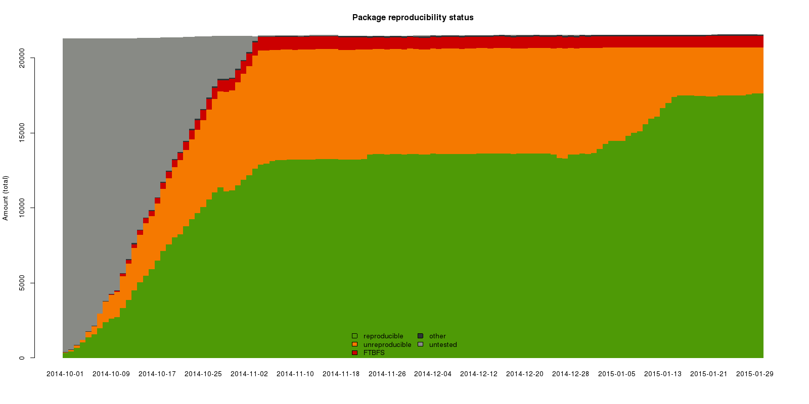
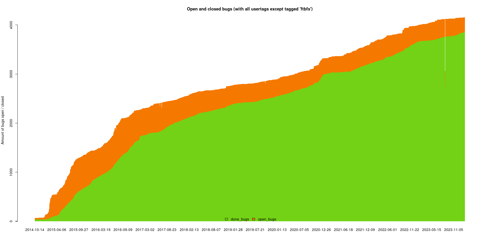
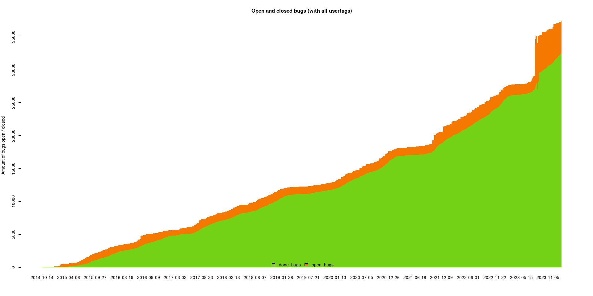
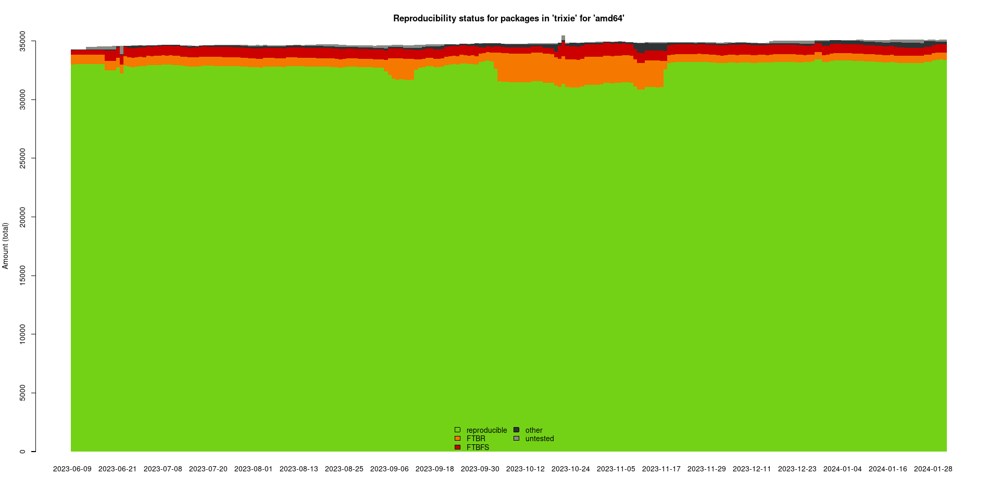
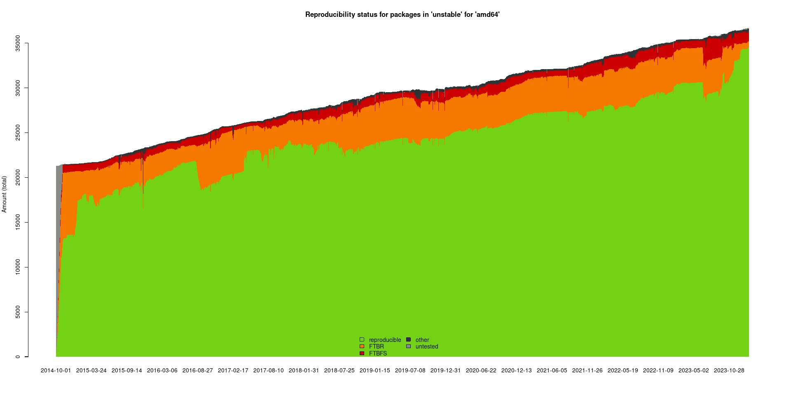
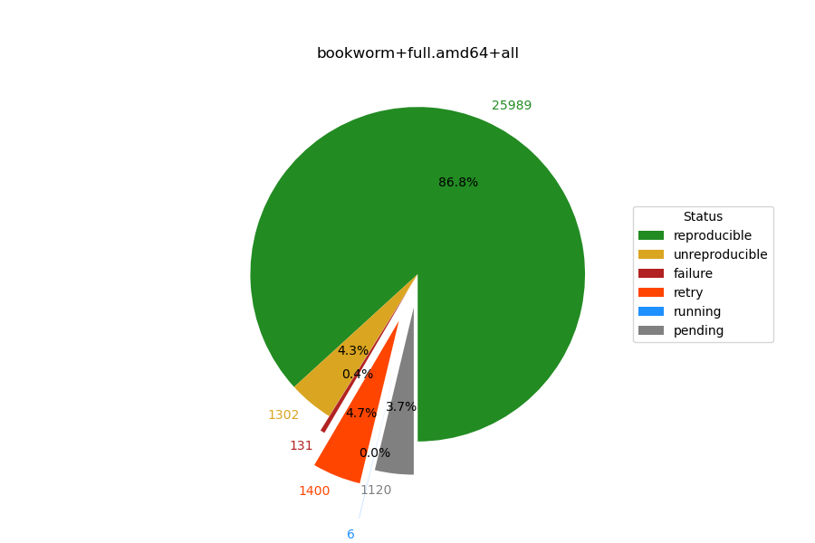

Olivier Barais
barais@irisa.fr
D'après des slides de la communauté build reproducible
https://salsa.debian.org/reproducible-builds/reproducible-presentations/
Three developers…
Alice


Bob
← Carol
Eve →
General problem
Can view source code for malicious flaws
But users install pre-compiled packages
Can we trust the compilation process?
We have a problem.
Solution?
1. Start with the same source
2. Ensure builds always have identical results
3. Compare results
How does this help?
Alice → Blackmail will be uncovered
Bob → Compromise detected
Carol → Tampered laptop will be discovered
Reduces incentive to attack in the first place
"Builds with the same dependencies"... ✖
"Reliable" builds... ✖
Identical build results
Wait…
- Dictionary/hash/database ordering
- Parallelism in builds
- Timestamps
- Build paths
- Non-deterministic file ordering
- Users, groups,
umask, environment variables, etc.
No doubt, it is a difficult endeavour
Come back 10 years ago
The problem
- Source code of free software available
- …most people install pre-compiled binaries
- No one really knows how they really correspond (even those building those binaries).
- As a result there are various classes of supply chain attacks.
some ancient history (>10 years ago)
- Thread on debian-devel@lists.debian.org from 2007. Deemed undoable by many.
Ancient history (>10 years ago)
- Thread on debian-devel@lists.debian.org from 2007. Deemed undoable by many.
- Before that a similar idea appeared in 2000 on debian-devel@l.d.o.
- And then in 2017 we learned from John Gilmore on rb-general@lists.reproducible-builds.org that GCC was reproducible in the early 1990s on several architectures!
Fast forward to 2023
https://lists.zx2c4.com/pipermail/wireguard/2023-April/008045.html
Wireguard (VPN app for Android) builds are now reproducible, their release is identical on their website, Google Play Store and F-Droid. 🎯🎯🎯🥳
(it's more complicated than that, see their mail.)
We were not even informed. 🥲 People just do reproducible builds as normal part of their work nowadays. 🤗
People just do reproducible builds as normal part of their work nowadays.
🤗
https://reproducible-builds.org/docs/definition/
- When is a build reproducible?
- A build is reproducible if given the same source code, build environment and build instructions, any party can recreate bit-by-bit identical copies of all specified artifacts.
- The relevant attributes of the build environment, the build instructions and the source code as well as the expected reproducible artifacts are defined by the authors or distributors. The artifacts of a build are the parts of the build results that are the desired primary output.
Reproducible build mission
- Enable anyone to independently verify that a given source produces bit by bit identical results.
- Reproducible Builds are an important building block in making supply chains more secure. Nothing more, nothing less.
- (Un)secure software build reproducibly still remains (un)secure software. However, with reproducible builds you can be sure that you are running the software you want to be running, built from the sources you want to be using.
By 2024 Reproducible Builds has been widely understood:
-
https://reproducible-builds.org/resources/
https://reproducible-builds.org/docs/
https://reproducible-builds.org/docs/publications/ - https://www.whitehouse.gov/briefing-room/statements-releases/2021/06/08/...
- requires "Software Bill of Material" (SBOM)s for govermental software
- so far only recommends reproducible builds / verified SBOMs
How did we get there?
Why money?
Why Snowden
How did we really get there?
2013 and 2014
- Lunar hosted a brainstorming meeting at DebConf13.
- and another one at DebConf14
- patches for
dpkg: sorting fixes and .buildinfo files (SBOM!) - in September 2014 I started systematic builds of Debian packages, twice. First just 100 packages, then all of them.
- Mike Perry and Seth Schoen gave a presentation at CCCongress in December 2014 showing "my" graphs. Wow.

Debian unstable, 20150131
2015
Common reasons for unreproducibilities:
SOURCE_DATE_EPOCH
- Who knows about SOURCE_DATE_EPOCH?
- Build time stamps are largly meaningless. SOURCE_DATE_EPOCH describes the time of the last modification of the source (in seconds since the Unix epoch).
- Supported by a lot of software today.
- The specification is from 2015 and was updated in 2017.
- https://reproducible-builds.org/docs/source-date-epoch/
diffoscope
- diffoscope tries to get to the bottom of what makes files or directories different. It will recursively unpack archives of many kinds and transform various binary formats into more human-readable form to compare them.
diffoscope
diffoscope
diffoscope example output
3852 reprodubility related bugs fixed (mostly upstreamed), 301 patches pending...
32000 bugs in 10 years ~= 8 per day
Resources about unreproducibilities:
- https://reproducible-builds.org/docs/
- 422 known issue types in reproducible-notes.git
- Lunar's talk at CCCamp 2015
- It's much easier to show common pitfalls making a package unreproducible than the opposite:
- https://github.com/bmwiedemann/theunreproduciblepackage
Detour: some unexpected benefits of reproducible builds
- Lower development costs and increased development speed through less developer time wasted on waiting for builds.
- Software development: does this change really have no effect / the desired effect only?
- Licence compliance: you can only be sure a binary is Free Software if it can be (re-)build reproducibly from a given source.
- Reproducible verified SBOMs.
https://reproducible-builds.org
And after all that effort...
what do we get?
- Minimal diffs on "deliberate" changes
- Cache ratio — save time, money & CO2
- Remove really unused build-dependencies
- Finds bugs!
Random characters in manpages?
-This manual page documents the usageoof WikipediaFS.
+This manual page documents the usage of WikipediaFS.
memcpy(&buf[1], &buf[2], strlen(buf)-1);memcpy(3): The memory areas must not overlap- memcpy(&buf[1], &buf[2], strlen(buf)-1);
+ memmove(&buf[1], &buf[2], strlen(buf)-1);
UB in docbook-to-man for i386: https://bugs.debian.org/842635
https://sources.debian.org/src/docbook-to-man/1%3A2.0.0-45/debian/patches/0010-Prevent-undefined-behaviour-in-memcpy-parameter-over.patch/
Debian & Reproducible Builds
We have been working in making Debian build reproducibly since 2013
"Torture test"
- Time & date
- Hostname & domain name
- Filesystem (
disorderfs) - Timezone & locale
uid&gid- Kernel & CPU type
| First rebuild in 2013 | 24% packages reproducible |
| March 2018 | 93% packages reproducible |
Short summary of Reproducible Debian
CI results for Debian trixie, 20240201
CI reproducibility of Debian amd64
| suite | reproducible | unreproducible | fails to build | other |
|---|---|---|---|---|
| stretch | 23040(93.2%) | 1514(6.1%) | 85(0.3%) | 80(0.4%) |
| buster | 26653(93.9%) | 1405(4.9%) | 232(0.8%) | 108(0.4%) |
| bullseye | 29698(96.2%) | 761(2.5%) | 274(0.9%) | 127(0.4%) |
| bookworm | 33240(96.9%) | 670(2.0%) | 260(0.8%) | 124(0.4%) |
| trixie | 33399(95.6%) | 619(1.8%) | 673(1.9%) | 135(0.4%) |
CI reproducibility of Debian amd64
| suite | reproducible | unreproducible | fails to build | other |
|---|---|---|---|---|
| stretch | 23040(93.2%) | 1514(6.1%) | 85(0.3%) | 80(0.4%) |
| buster | 26653(93.9%) | 1405(4.9%) | 232(0.8%) | 108(0.4%) |
| bullseye | 29698(96.2%) | 761(2.5%) | 274(0.9%) | 127(0.4%) |
| bookworm | 33240(96.9%) | 670(2.0%) | 260(0.8%) | 124(0.4%) |
| trixie | 33399(95.6%) | 619(1.8%) | 673(1.9%) | 135(0.4%) |
CI results for Debian unstable, 20240201
Debian policy
- 2017: packages should build reproducibly.
- 2025? reproducible packages must not regress.
- 2025? NEW packages must build reproducibly.
- 2027? packages must build reproducibly.
100%!
- 100% reproducible is a political decision and nothing technical.
- We need to change
debian-policy! - We can work around 'must-have-offenders' using whitelists in the beginning.
- The goal is still 100%, whitelists are just a way to achieve that goal eventually.
future reproducibility of Debian amd64
| suite | reproducible | unreproducible |
|---|---|---|
| stretch | 23040(93.2%) | 1514 |
| buster | 26653(93.9%) | 1405 |
| bullseye | 29698(96.2%) | 761 |
| bookworm | 33240(96.9%) | 670 |
| trixie | 36000 | 256 |
| forky | 40000 | 77 |
| forky+1 | 45000 | 42 |
| forky+2 | 50000 | 0 |
Debian testing migration
- Since the end of 2023, CI reproducible-builds results are included in the excuses output for Debian testing migration, but there is no penalty nor bonus yet.
- In 2025 for Debian 14 "forky" however there should penalties for violating:
- reproducible packages must not regress (to be allowed into
testingand therefore intostable). - NEW packages must build reproducibly (to be allowed into
testingand therefore intostable).
- reproducible packages must not regress (to be allowed into
- At first there could be whitelisting of some needed packages, but less over time until we can drop those exceptions.
rebuilders https://beta.tests.reproducible-builds.org/debian(these are not CI builds anymore)s
100% reproducibility in theory is not enough, by far.
- Then we need rebuilders.
- Thus we need a working
snapshot.debian.orgservice. - Without snapshot.d.o we cannot recreate the exact same environments...
- but snapshot is buggy: #1050815, #1031628, #1029744, #1034000, #1012559, #979115, #969603…
- And there we have been stuck for more than five years...
an idea at the summit 2023: do we need all of snapshot.d.o?
- 70000 binary packages in Debian $suite
- these build-depend on only 30000 packages, so 40000 packages are never used as build-depends.
- let's analyze all those .buildinfo files!
- those 30000 packages are only used in 100000 variations!
- that's less than 100 GB per arch and suite!
- https://rebuilder-snapshot.debian.net was born.
https://rebuilder-snapshot.debian.net
- a cache for snapshot.debian.org, which stores only the packages used as build-depends today and makes them available via SHA256, path and an API.
- each arch takes roughly a week to seed from snapshot.d.o
- each arch only takes hours to seed from another rebuilder-snapshot instance
- we already run two instances and our goal is to allow many instances
https://rebuilder-snapshot.debian.net
- a cache in for snapshot.debian.org, which stores only the packages used as build-depends today and makes them available via SHA256, path and an API.
- so debrebuild can use debootsnap together with metasnap to establish trust.
- one blocking bug currently: issue #40
- hopefully usable RSN. Many thanks to lynxis and josch!
- also: snapshot.d.o is still awesome, despite it's flaws today. We need (to fix) it! Many thanks weasel & DSA!
Debian 2024
- testing migration can and will be used to enforce policy also in regards of reproducible builds (probably only enforcing for real in 2025...)
- for a sensible setup of that, we need real rebuilders, aiming to rebuild what Debian distributes.
- for that, we need a better working snapshot.d.o, which with rebuilder-snapshot finally is there.
- CI builds will stay, to find issues. Rebuilders are needed to show the absence of issues.
Beyond Debian…
- coreboot, Fedora, LEDE, OpenWRT, NetBSD, FreeBSD, Archlinux, Qubes, F-Droid, NixOS, Guix, Meson, etc.
- Other projects using "Debian"'s testing framework
- Reproducible Builds summits (Athens, Berlin, Paris, Marrakech, Venice, Hamburg)
Theory vs Praxis
- In theory, we are done. In practice, we have shown that reproducible builds can be done in theory.
- Now we also need many rebuilders (!= CI builders) and we need to store the results somewhere and we need to define criterias how tools should treat that data, and then we need those tools...
- And those missing 5% are also crucial however, or at least 1% of them. For Debian, 1% means 300 softwares...
Summary, looking forward
- Many projects support or aim for reproducible builds today. This is a huge success.
- Next: finish those last 1-5% upstream.
- Next: create infrastructure of rebuilders in practice.
- Next: create infrastructure, processes and tools to securely use those results...
- Next: project-level consensus and commitment to reproducible builds in practice.
- Next: ... !!!
Get involved!
| Visit: | reproducible-builds.org |
| Subscribe: | lists.reproducible-builds.org → rb-general |
| Follow: | @ReproBuilds on |
| Join: | #reproducible-builds (on OFTC) |